Background
Between roughly 1905 and 1915, Sergei Mikhailovich Prokudin-Gorskii traveled through Russia, photographing through a unique method. He essentially took three photographs of the same scene one after another, each through a different color filter. Then, by recombining the three exposures, we can reproduce a colored image.
This project was centered around combining the three exposures to create a colored image. What the Library of Congress scanned was one tall grayscale image per plate, holding all three exposures stacked vertically. So, recovering the colored photograph meant splitting the image into its three exposures, then stacking them. However, one main problem is that since the three exposures were taken one after another, things changed in between each shot. For example, the camera may have shifted, the plate may have moved, or the scene may have changed slightly. So, simply stacking the three plates would not create a perfect colored image.
As we can see in the example on the right, stacking the three exposures exposes how the plates were not correctly aligned. The color channels are offset from each other, creating an obvious visual effect of duplicate edges, almost like a 3D image effect. Thus, the goal of this project was to find the correct offsets for each channel, and then apply those offsets to create a properly aligned colored image.
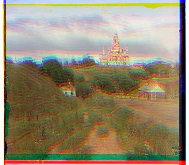
Exhaustive search at one scale
Unlike humans, a computer isn't able to intuitively tell how far apart two channels are. So, instead, we can compare the two channels at a range of offsets, then select the offset that produces the best match. The range, or search radius, I selected was 15 pixels, meaning that I checked every displacement from (−15, −15) to (15, 15).
That leaves the question of how we determine the best match. In the project, I used L2 norm (Euclidean distance):
and normalized cross-correlation (NCC), which subtracts the mean from each channel, scales both to unit length, and takes their dot product:
In practice, I negated the L2 so that both metrics interpret a higher score as better.
A separate piece of processing I did to the images was cropping. I cropped 12% off of each side before scoring, essentially cutting out the black and white borders across all three channels before feeding them into the scoring metrics. This was so that the metric would be measuring the photograph itself, rather than producing a high score simply because the borders matched.
On the three low-resolution JPEGs this works well, and both metrics return exactly the same offsets.
However, this approach has two limits that make it unusable on the full-size .tif scans. First, in the full sized images, the displacements can run much larger, making the number of candidates required to find the best match grow significantly. Second, each metric evaluation will look at all the pixels of a full-resolution channel, and doing that for all candidates becomes computationally expensive and will take a long time. So, this motivates the next section, where we can use a pyramid to reduce the number of candidates and the number of pixels we need to look at.


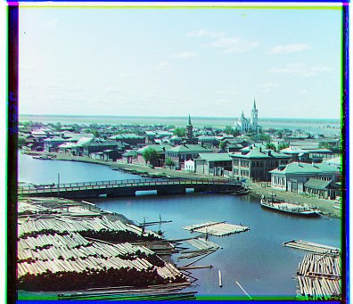
Pyramid
To fix the problem of searching at full resolution, I implemented the strategy of using an image pyramid. Essentially what this does is take the image, blurs it, downsample it, and repeats, creating a series of smaller images. Then, I can perform the exhaustive search as described in section 2 on the smallest image, which is much faster, and then use that result to inform the search on the next larger image, and so on until I reach the original resolution.
For example, Emir's green channel is 49 pixels down and 24 to the right in the full sized scan. But, by halving the image five times, the same offset is about a pixel and a half at that level.
The pyramid was constructed by starting at the full sized image, then blurring it and subsampling it to create the next level, and repeating this process until the shorter side of the image would fall below 64 pixels. The blur was done using an approximation of the Gaussian distribution: [1, 4, 6, 4, 1] / 16, applied once down the columns and once across the rows, which gives the same result as convolving with a 5 × 5 Gaussian kernel but is more efficient.
The search itself starts from the top level of the pyramid, the most coarse image. At this top level, the same exhaustive search as described in section 2 is performed. Since the image is small, the search is fast. Then, I go down one layer. As I go down each layer, I double the displacement I currently have, since the image was subsampled by a factor of 2 originally. Then, I perform a search around that doubled displacement, but only searching 2 pixels around it as a correction.
The results of using the pyramid are shown in the table below. Every offset in it comes from NCC scored on raw pixels. The pyramid was able to align 16 of the 17 plates, with only Emir's red channel failing. Additionally, this method also worked on my three selected plates, the greenhouse, peonies, and poppies plates. Section 5 re-runs every plate on gradient magnitude instead, which fixes Emir but also changes the offsets for some of the other plates.
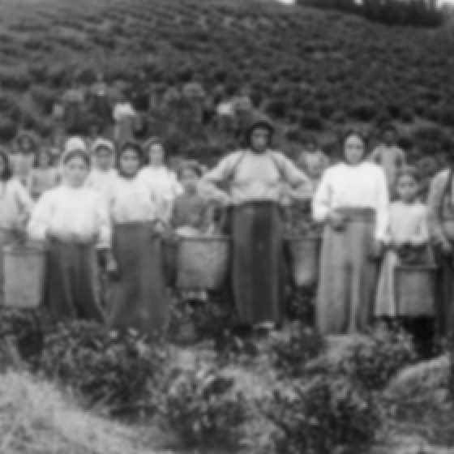
| Plate | Green (dy, dx) | Red (dy, dx) |
|---|---|---|
| cathedral | (5, 2) | (12, 3) |
| church | (25, 4) | (58, −4) |
| emir | (49, 24) | (483, −461) |
| harvesters | (60, 17) | (124, 13) |
| icon | (41, 17) | (89, 23) |
| ilemselga | (40, 7) | (130, 11) |
| melons | (81, 10) | (178, 13) |
| monastery | (−3, 2) | (3, 2) |
| religous_painting | (27, 3) | (68, 7) |
| self_portrait | (79, 29) | (176, 37) |
| siren | (49, −6) | (96, −25) |
| three_generations | (53, 14) | (111, 11) |
| tobolsk | (3, 3) | (6, 3) |
| wharf | (15, −7) | (82, −16) |
| greenhouse | (60, 28) | (126, 35) |
| peonies | (51, 3) | (104, −6) |
| poppies | (8, 8) | (60, 13) |
metric: NCC on raw pixels emir: the only plate of the seventeen that fails greenhouse, peonies, poppies: my three selected plates
Fixing Emir: Aligning on edges, not brightness
Emir was the one plate that has not been rendered properly by our methods so far. The reason is likely because of his robe. As seen below, under the blue filter it is the brightest thing, while under the red it is the darkest. Because the blue and red channels are almost inverted, the NCC metric ended up finding the bright wall of the red channel to match better over the bright robe of the blue channel, resulting in a misalignment.
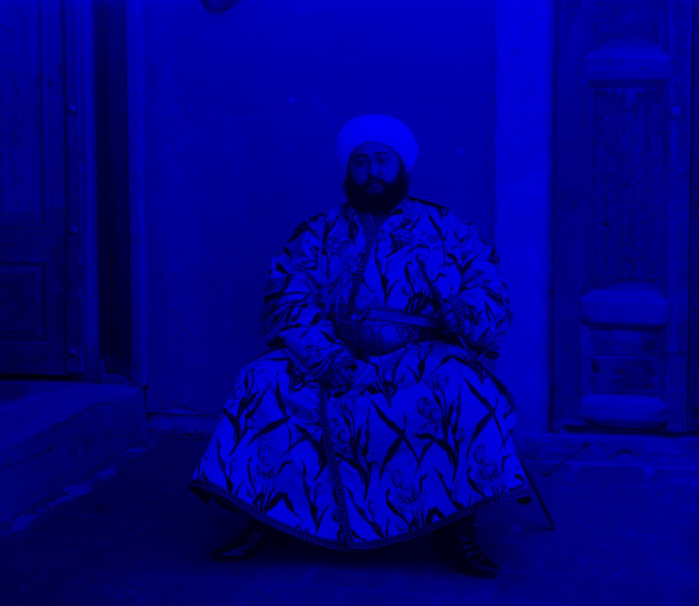
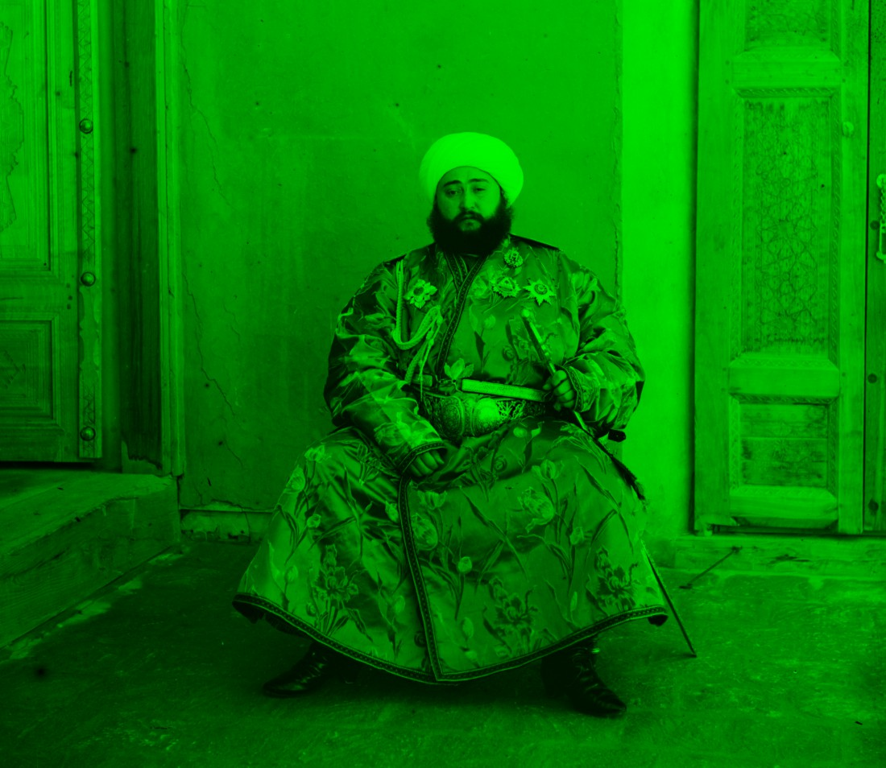
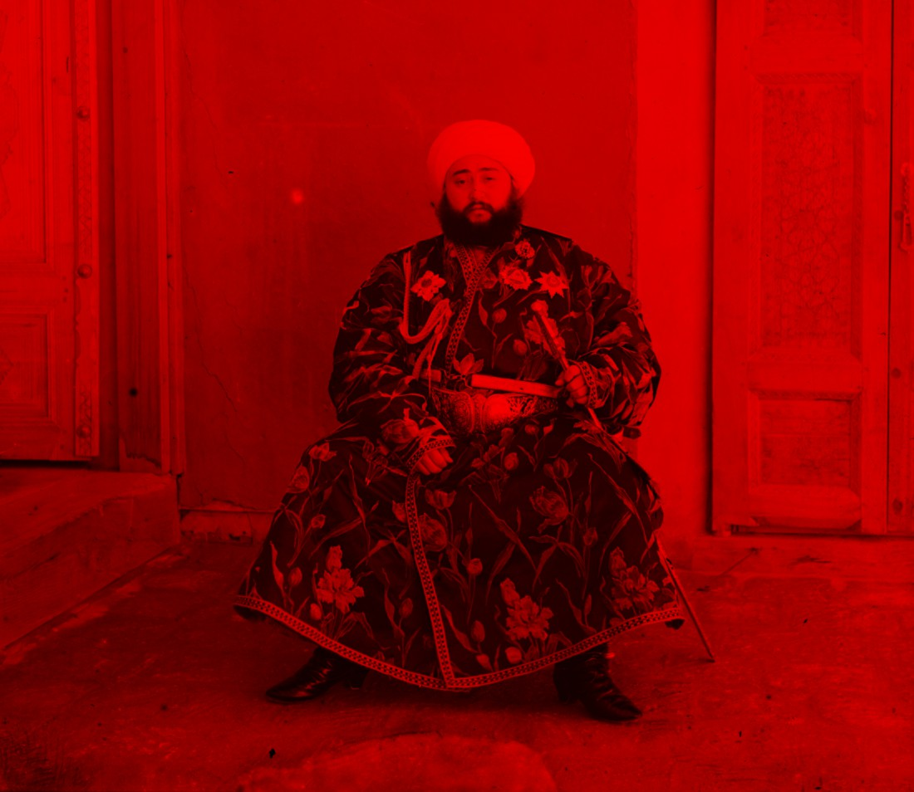
To fix this, I scored gradient magnitude instead of brightness. The gradients are computed by subtracting each pixel from its neighbor, once down the columns and once across the rows,
and the feature fed to the search is their magnitude:
This essentially captures the edges in the image, and avoids the issues with brightness altogether. As we can see below, using NCC on gradient magnitude correctly aligns the channels.
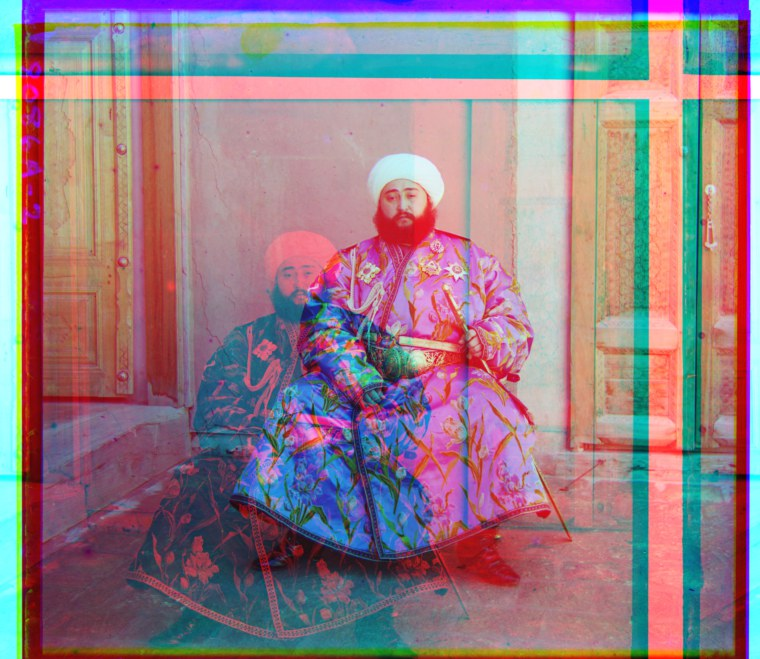
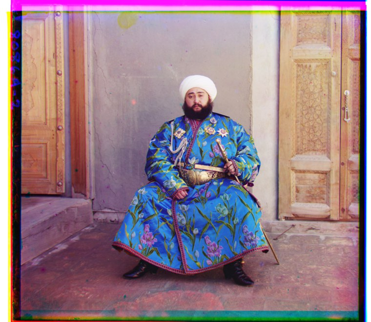
The recovered collection
Below are all seventeen plates, aligned by multi-scale pyramid search with normalized cross-correlation on gradient magnitude. The green (G) and red (R) channel displacements are given as (dy, dx) in pixels at full scan resolution.
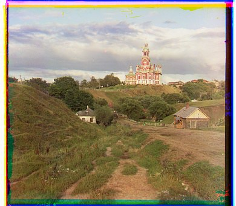
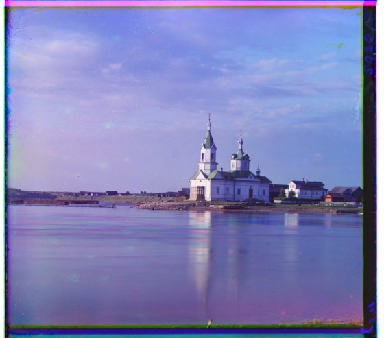
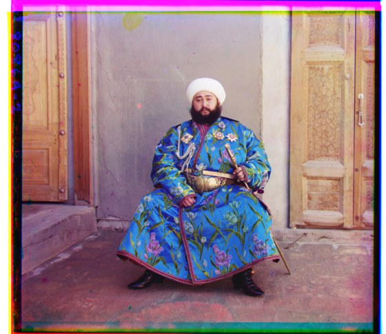
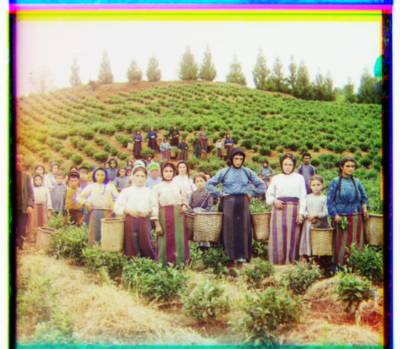
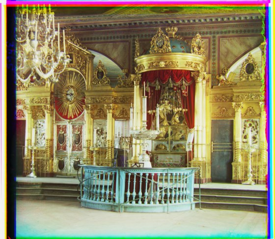
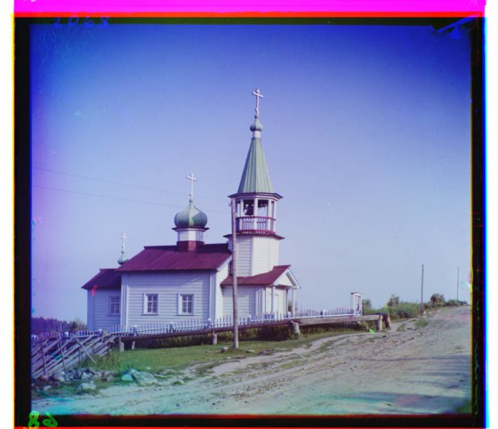
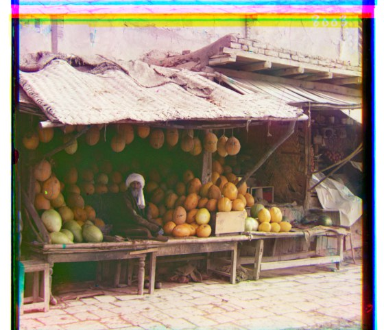
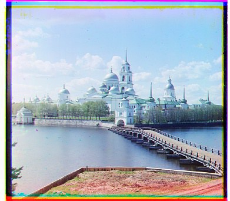
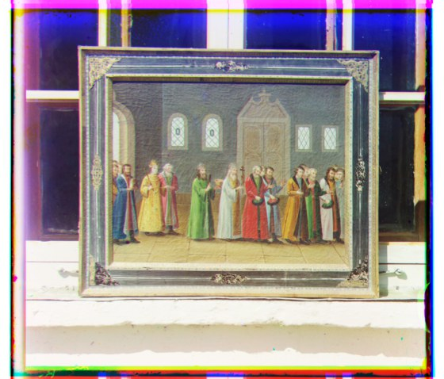
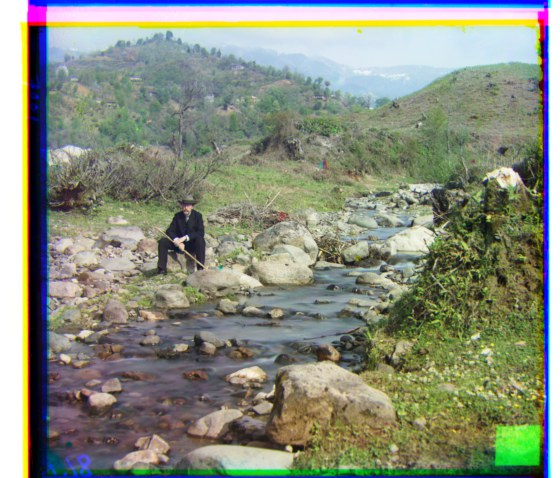
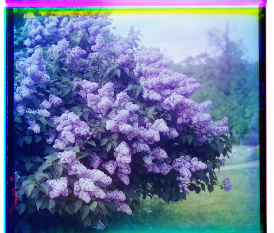
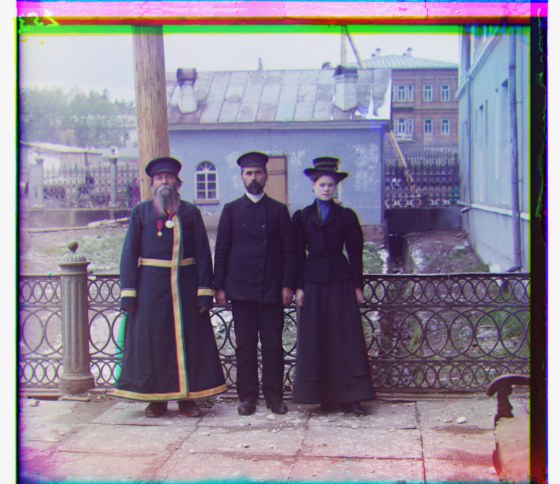
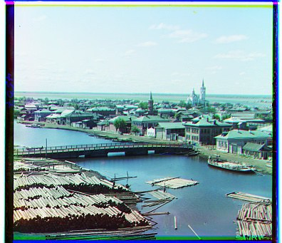
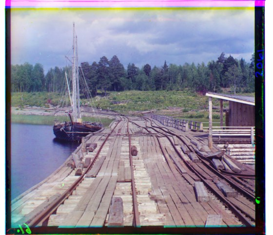
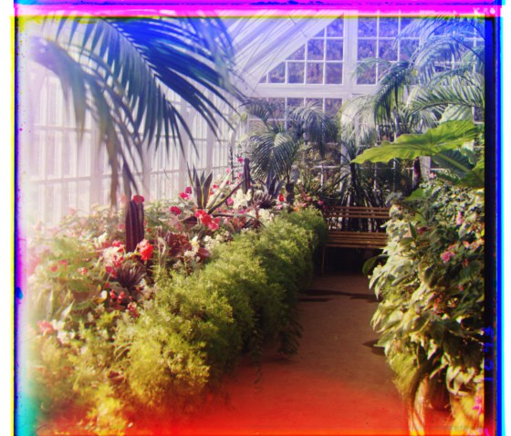
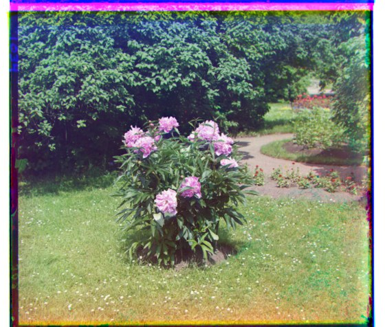
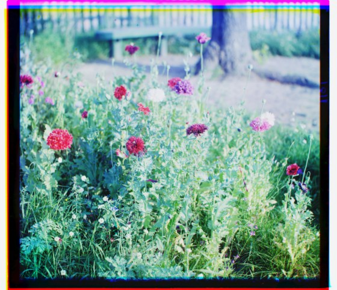